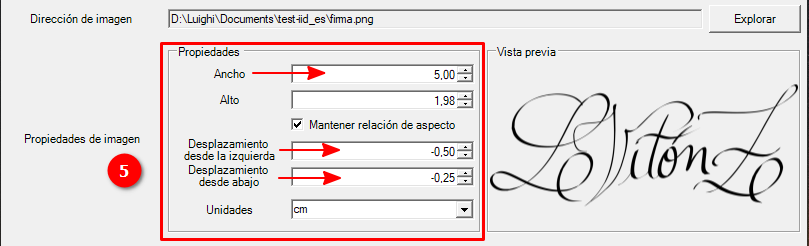
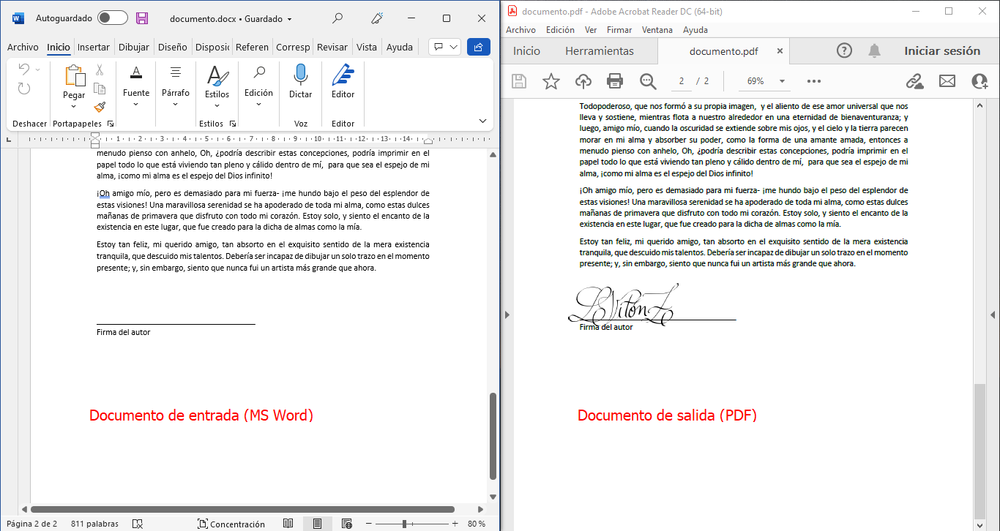
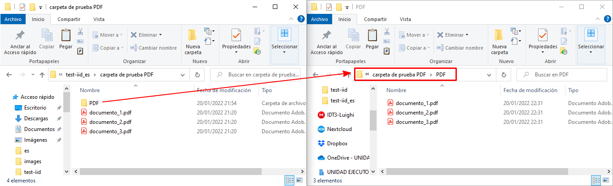

Uso del software como Aplicación de Interfaz Gráfica
Este es el uso predeterminado del software, que se puede iniciar desde el menú Inicio y abre automáticamente la interfaz gráfica para ingresar a las opciones y procesar los archivos de Word / PDF. Este artículo se divide en dos secciones orientadas a los dos tipos de documentos de entrada para insertar la imagen:
Insertar imagen en archivos de MS Word
Tanto para archivos Word como PDF, hay dos opciones para usar el software: con archivos individuales o con una carpeta que contiene los archivos a procesar.
Para archivos individuales:
Seleccione Documento de Word como Formato de entrada de documento.
Seleccione Archivos como Tipo.
Haga clic en Explorar en la fila Dirección de carpeta/archivos para seleccionar un archivo de MS Word válido o una lista de archivos.

Abre el explorador de archivos donde debe localizar el documento y abrirlo (también puede seleccionar varios documentos e insertar la imagen en todos ellos).
Haga clic en Explorar en la fila Dirección de imagen para seleccionar un archivo de imagen válido a insertar en los documentos seleccionados anteriormente.
También abre el explorador de archivos para seleccionar la imagen deseada:
Cuando se selecciona el archivo a través del explorador de archivos, se muestra una vista previa de la imagen en el cuadro de Vista previa. También carga las dimensiones medidas en la unidad seleccionada, que se muestra en la fila Unidades.
Puede modificar el tamaño de la imagen a insertar y si se marca Mantener relación de aspecto, la otra dimensión se modifica en consecuencia. También puede modificar el Desplazamiento desde la izquierda y Desplazamiento desde abajo. También puede ingresar números negativos para obtener un desplazamiento hacia la izquierda y hacia abajo.

Una vez que se establecen todas las dimensiones, puede ingresar el marcador de posición, que es una parte del texto en el documento que funciona como referencia.
Tenga en cuenta que Desplazamiento desde la izquierda y Desplazamiento desde abajo son relativos a la posición de la esquina superior izquierda del texto en el documento. Para obtener información más detallada sobre el cálculo de la posición de la imagen, consulte Posición de la imagen relativa al texto.
En las opciones de guardado, puede seleccionar si desea guardar el PDF en la misma carpeta donde está el documento de MS Word o en una subcarpeta e ingresar el nombre. Si la carpeta no existe, el software la creará por usted.
Finalmente, puede hacer clic en Generar para procesar los documentos e insertar la imagen con las dimensiones ingresadas en la referencia ingresada.

Cuando se inicia el proceso se abre un nuevo diálogo que muestra en una barra de progreso el avance del proceso e imprime mensajes informativos sobre el estado actual del flujo de procesamiento.
Luego, puede verificar el resultado abriendo el PDF. No olvide cerrar el PDF si desea volver a generarlo; de lo contrario, se producirá un error ya que el software no puede escribir el archivo si está abierto.

Para una carpeta que contiene archivos de Word:
Es bastante similar al anterior flujo de trabajo cambiando en el segundo paso:
Seleccione Documento de Word como tipo de entrada de documento.
Seleccione Carpeta como Tipo.
Haga clic en Explorar en la fila Archivos/Ruta de carpeta para seleccionar la carpeta que contiene los archivos de Word.
Abre el explorador de carpetas donde debe localizar la carpeta que contiene los archivos de Word.
A partir de aquí, continúa con los pasos 4 a 8 de ficheros individuales. Al hacer clic en el botón Generar, se abre el cuadro de diálogo de progreso que muestra el estado de procesamiento de todos los documentos de Word dentro de la carpeta seleccionada.
Al abrir la carpeta, puede verificar los archivos generados (cada uno por documento de Word que se encuentra en la carpeta seleccionada).
Insertar imagen en archivos PDF
A diferencia del caso de los archivos de Word, para PDF hay dos opciones para la referencia: relativa al texto y relativa a la página, mientras que Word solo tiene relativa al texto.
Con referencia relativa al texto
En este caso, es bastante similar al caso de Word, solo que cambia tanto para los archivos individuales como para los casos de carpetas, el Formato de entrada del documento.
Para archivos individuales:
Seleccione Documento PDF como tipo de entrada de documento.
Seleccione Archivos como Tipo.
Haga clic en Explorar en la fila Dirección de carpeta/archivos para seleccionar un archivo PDF válido o una lista de archivos.
Abre el explorador de archivos donde debes localizar el documento y abrirlo (también puedes seleccionar varios documentos e insertar la imagen en todos ellos).
Continúe del 4 al 8 como el caso de Word para archivos individuales. Asegúrese de que la opción Relativo al texto esté seleccionada en la fila Tipo de referencia.
Después de que el programa haya completado esa tarea con éxito, puede verificar el PDF resultante en la subcarpeta creada (con el nombre PDF, si no se cambió en las opciones) en el directorio del archivo original.
Para una carpeta que contiene archivos PDF:
Seleccione Documento PDF como tipo de entrada de documento.
Seleccione Carpeta como Tipo.
Haga clic en Explorar en la fila Dirección de archivo/carpeta para seleccionar la carpeta que contiene los archivos PDF.
Abre el explorador de carpetas donde debe localizar la carpeta que contiene los archivos PDF.
A partir de aquí se continúa con los 4 a los 8 pasos de Word para archivos individuales. Al hacer clic en el botón Generar, se abre el cuadro de diálogo de progreso que muestra el estado de procesamiento de todos los documentos PDF dentro de la carpeta seleccionada.
Al abrir la carpeta, puede verificar los archivos generados (cada uno por documento pdf de entrada que se encuentra en la carpeta seleccionada).

Con referencia relativa a la página
En este caso varía, ya que incorpora sus propias opciones para referir la posición de la imagen con respecto a la página.
Para archivos individuales:
Seleccione Documento PDF como tipo de entrada de documento.
Seleccione Archivos como Tipo.
Haga clic en Explorar en la fila Dirección de carpeta/archivos para seleccionar un archivo PDF válido o una lista de archivos.
Haga clic en Explorar en la fila Dirección de imagen para seleccionar un archivo de imagen válido para insertar en los documentos seleccionados anteriormente. Cuando se selecciona el archivo a través del explorador de archivos, se muestra una vista previa de la imagen en el cuadro de vista previa. También carga las dimensiones medidas en la unidad seleccionada, que se muestra en la fila Unidades.
Puede modificar el tamaño de la imagen a insertar y si se marca Mantener relación de aspecto, la otra dimensión se modifica en consecuencia. También puede modificar el Desplazamiento desde la izquierda y Desplazamiento desde abajo. También puede ingresar números negativos para obtener un desplazamiento hacia la derecha y hacia abajo.
Seleccione la opción Relativo a la página en la fila Tipo de referencia.
Ingrese el número de página y seleccione qué esquina de la página será la referencia de página para la inserción de la imagen. Para obtener información más detallada sobre el cálculo de la posición de la imagen con respecto a la página, consulte Posición de la imagen con respecto a la página.
Puede modificar el nombre de la subcarpeta donde se exportarán los documentos, si lo desea.
Haga clic en Generar para crear un nuevo documento PDF con la imagen insertada.
Cuando se inicia el proceso se abre un nuevo diálogo que muestra en una barra de progreso el avance del proceso e imprime mensajes informativos sobre el estado actual del flujo de procesamiento.
Luego, puede verificar el resultado abriendo el PDF. No olvide cerrar el PDF si desea volver a generarlo; de lo contrario, se producirá un error ya que el software no puede escribir el archivo si está abierto.
Para una carpeta que contiene archivos PDF:
Seleccione Documento PDF como tipo de entrada de documento.
Seleccione Carpeta como Tipo.
Haga clic en Explorar en la fila Dirección de archivo/carpeta para seleccionar la carpeta que contiene los archivos PDF.
Abre el explorador de carpetas donde debe localizar la carpeta que contiene los archivos PDF.
A partir de aquí se continúa con los pasos 4 al 8 de archivos individuales. Asegúrese de que la referencia esté establecida en Relativo a la página como se especifica en el paso 6. Al hacer clic en el botón Generar, se abre el cuadro de diálogo de progreso que muestra el estado de procesamiento de todos los documentos PDF dentro de la carpeta seleccionada.
Al abrir la carpeta, puede verificar los archivos generados (cada uno por documento PDF de entrada que se encuentra en la carpeta seleccionada).